Six Builds, One Tool Changer: Teaching a Micro820 to Take the Short Way Round
An eight-station CNC tool magazine, driven by an Allen-Bradley Micro820 and grown in six stages — from a single seal-in latch to a sixteen-rung program that lets an operator type a tool sequence on a four-bit thumbwheel, picks each tool by the shorter of two rotational arcs, dwells at the transfer point, counts parts, and finishes its lap before it stops. Ladder handles the interlocking; six IEC 61131-3 Structured Text function blocks handle the arithmetic. Verification came from reading the ladder compiler's own output — which is where three defects were hiding that the diagram looked innocent of.
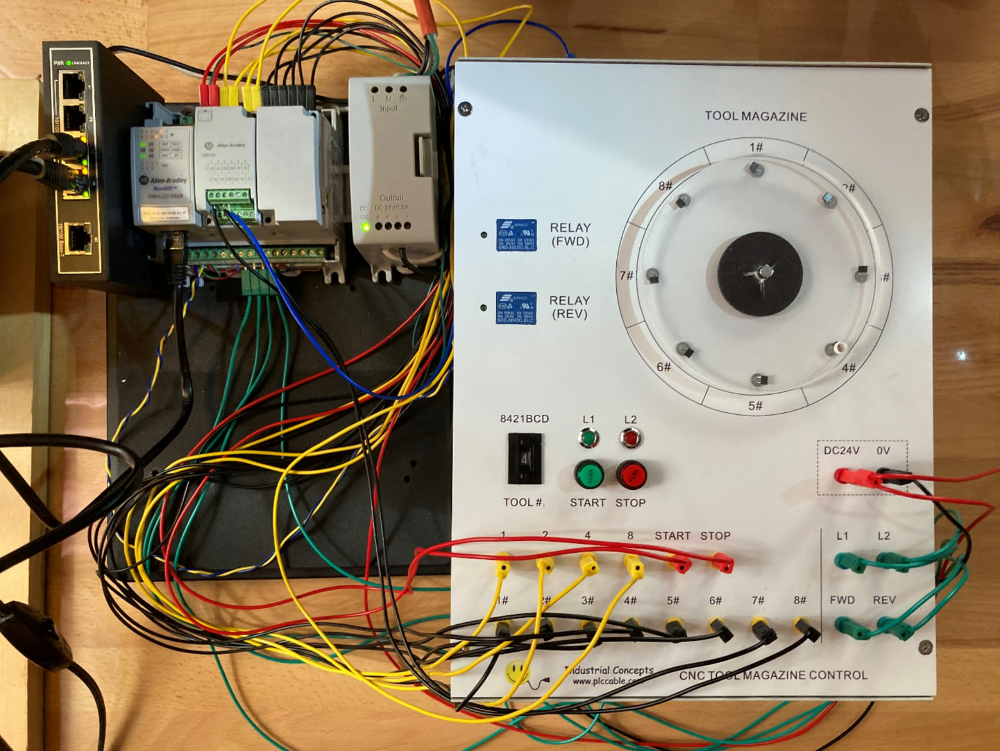
Not G-code. A carousel that has to choose a direction.
The trainer is an eight-station rotating tool wheel. A magnet on the platter passes over eight discrete position sensors, so the controller sees position as a one-hot code across eight wires — no encoder, no absolute count. A four-bit BCD thumbwheel lets an operator name a station by number. Two digital outputs drive the wheel forward and reverse. That is the entire interface.
Which makes the control problem sequential, not geometric. There is no toolpath to interpolate. The question the program has to answer, over and over, is: given where the wheel is parked and which tool is wanted next, which way do I spin so the trip is shortest? Then detect arrival, carry the tool back to the transfer station, and do it again for every entry in a list the operator typed in at run time.
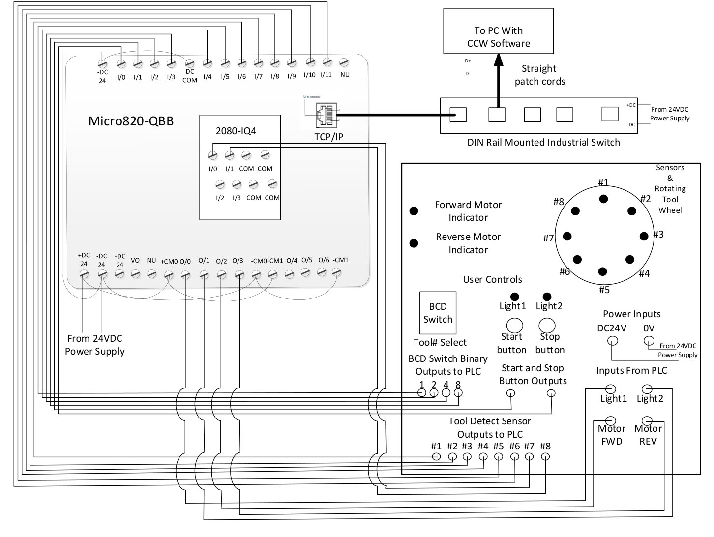
| Designator | Alias | Dir | Function |
|---|---|---|---|
| _IO_EM_DI_00 | Stop | IN | Stop push button |
| _IO_EM_DI_01 | Start | IN | Start push button |
| _IO_EM_DI_02…05 | BCD1, 2, 4, 8 | IN | Thumbwheel bits, binary weights |
| _IO_EM_DI_06…11 | Position1…6 | IN | Wheel position sensors 1–6 |
| _IO_P1_DI_00…01 | Position7, 8 | IN | Sensors 7–8, via the 2080-IQ4 plug-in |
| _IO_EM_DO_00…01 | Light1, Light2 | OUT | Indicator lamps |
| _IO_EM_DO_02…03 | FWD_Motor, REV_Motor | OUT | Forward / reverse motor relays |
Controller: Allen-Bradley Micro820 2080-LC20-20QBB — 12 DI, 7 DO, 4 AI, programmed over Ethernet from Connected Components Workbench.
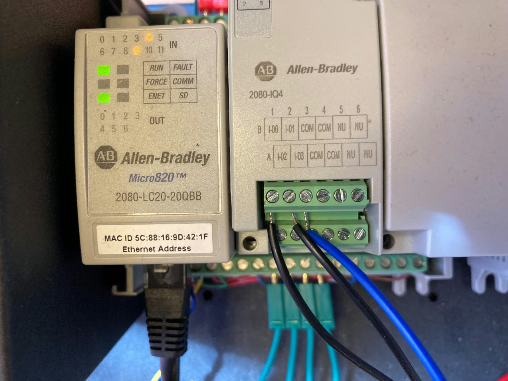
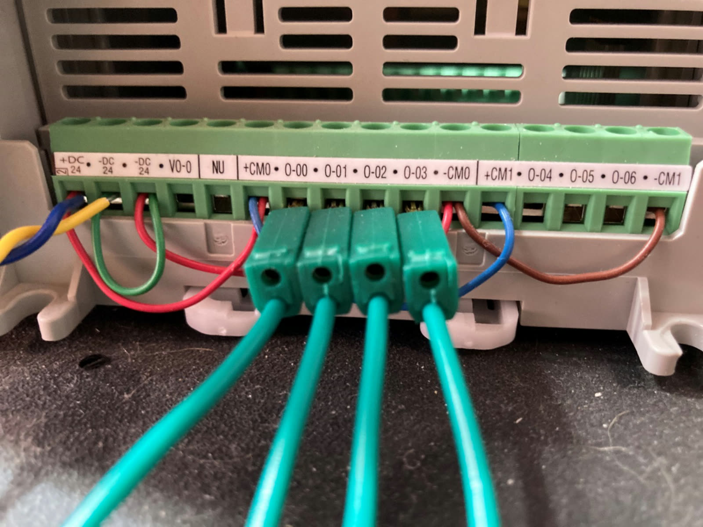
One rule for splitting the languages.
CCW offers Ladder Diagram, Structured Text and Function Block Diagram. The whole application partitions on a single rule: ladder for interlocking and sequencing, Structured Text for arithmetic and decisions. Ladder is the right notation for seal-in latches, motor interlocks and one-shot pulse routing — and it is what a maintenance technician expects to find at 3 a.m. But expressing a modulo, a weighted binary decode or a nested conditional in ladder produces a diagram three screens wide that nobody can read. Those go in ST.
The result is six user-defined function blocks called from a main ladder program that never exceeds sixteen rungs. Fourteen physical input points get consumed by two of them and leave as two integers, in a single rung.
| Block | Takes | Returns | Responsibility |
|---|---|---|---|
| FB_Position_to_dec | 8 sensor bits | PositionValue_out (UINT) | One-hot sensor bus → station number 1–8 |
| FB_BCD_to_Dec | 4 thumbwheel bits | PositionSelect_out, BCD_load_out | Debounce, decode BCD, flag switch position 0 |
| FB_DeterminRotation | base, target, detected | DirectionState (1 fwd / 2 rev) | Shortest-arc decision, latched between base crossings |
| FB_detectTool | as above + RotationState | DirectionState (BOOL) | Flip direction at the pickup, and again at the base |
| FB_LoadArray | load pulse, held value | PositionSequence[1..10], PositionMax | Edge-triggered store of a station into the sequence |
| FB_SequenceArray | sequence, max, detected | SequenceIndex, PickUp_EN, Place_EN | Advance the index modulo the count; emit event pulses |
Two hazards that shape every block
A PLC re-runs its program every scan, so any input that stays true for more than one
scan — which is every mechanical input — will retrigger its action repeatedly. Every
event in this application is therefore converted to a single-scan pulse with the
delayed-copy idiom. And the thumbwheel is a rotary make-before-break switch that emits
transient garbage codes while turning, so FB_BCD_to_Dec runs a
self-resetting 100 ms TON and requires two consecutive equal
samples before it will assert a decoded value.
BCD0_delayed := BCD0_Load_in; // one scan of Inc_EN per rising edge, no matter how long the switch sits there
First give it memory. Then give it motion.
Stage 1 is one rung: a normally-closed Stop in series with the parallel pair
of Start and the output's own feedback contact. That feedback branch
is the memory — and reading the compiled Structured Text makes it explicit, the
second disjunct being the seal that holds the output true until the series path opens.
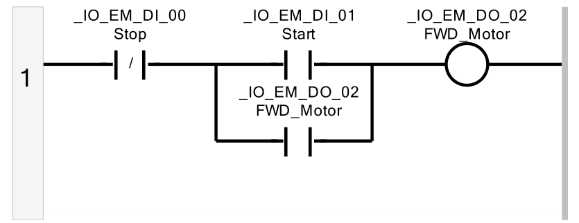
Stage 2 replaces the operator's fingers with sensors: a second seal-in built from
Position1 and Position2 instead of the buttons, the whole rung
gated by RunState. The detail that matters is the third rung — reverse is
derived from the inverse of forward, not from an independent condition, so the
two contactors can never be commanded together. That is a program-level interlock sitting
on top of the electrical one in the panel.
FWD_Motor := ((RunState AND Position1) OR (RunState AND FWD_Motor)) AND NOT Position2;
REV_Motor := RunState AND NOT FWD_Motor; // mutual exclusion by construction
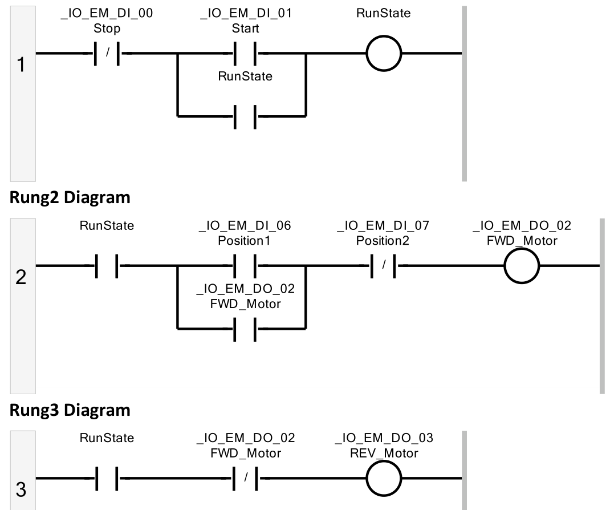
Fourteen wires in, two integers out.
Stage 3 is where the program stops being wiring and starts being software.
FB_Position_to_dec sums the eight one-hot sensor bits against their station
weights; FB_BCD_to_Dec debounces and decodes the thumbwheel. Both run in a
single rung. An = compare between the two results produces
ToolDetected, which takes over the stopping role from the hard-wired second
sensor — so the pickup station becomes selectable at run time, without
recompiling.
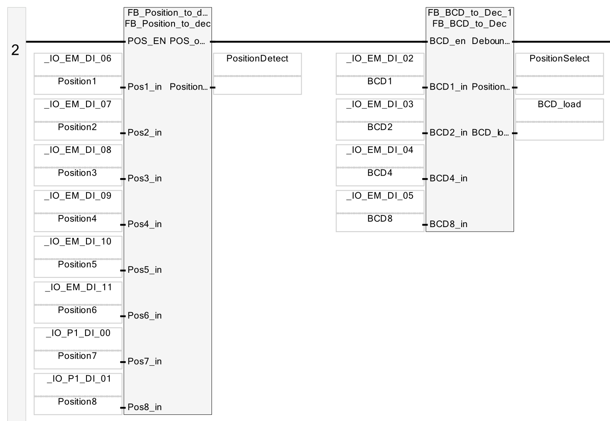
PositionSelect land on a value, and power flow through the compare into the motor rungs — green is energised, exactly as the controller sees it.The antipode trick: split the wheel, then just compare.
With a target selectable at run time, the wheel needs to decide which way to spin. Both arcs between base B and target T sum to eight stations, so the decision reduces to a single question: is the target in the forward half? The implementation answers it by computing the station opposite the base and using it as a boundary:
TempDint := MOD(TempDint + 4, 8) + 1; // the +1 returns it to 1-based station numbering
PositionOpposite := ANY_TO_UINT(TempDINT);
When PositionOpposite > PositionSelect_in, the forward half is the ordinary
open interval and the test is a direct comparison. When the wheel wraps past station 8 the
numbers stop being monotonic, so the code flips strategy and excludes the reverse
arc rather than testing the forward one. Two branches, no trigonometry, no lookup table.
The whole decision is also guarded: FB_DeterminRotation only evaluates while
the wheel is sitting over the base, and holds its previous value otherwise. The wheel is in
continuous motion, and the inputs to the decision are only meaningful at the reference
point. FB_detectTool then does the reversal — flipping direction on arrival at
the target so the tool is carried back, and flipping again at the base for the next
outbound leg. Together they are two interacting two-state machines.
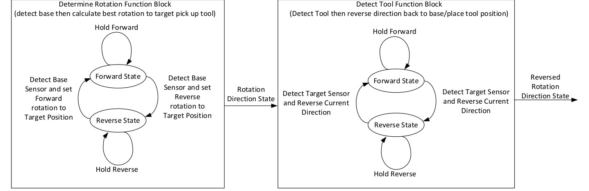
Try it — the decision, exhaustively
Pick a base and a target. The wheel shades the two arcs the antipode carves out, the Structured Text highlights the branch that actually executes, and the matrix underneath runs the same function over all 56 ordered pairs at once.
Two things fall out of the exhaustive sweep. First, across all 56 ordered (base, target) pairs the block never picks the longer arc — not once. Second, there is exactly one equidistant target per base, the true antipode B+4, where both arcs are four stations long; the code resolves every one of those ties forward. A demo that appears to "take the long way" at that one station is behaving as specified, because there is no shorter way to take. The block's own header comment flags this as a consequence of the wheel's even order: with an odd number of stations every target would have a strictly shorter arc and the test would be exact.
Worth noting what PositionOpposite actually is. For base 1 it evaluates to 6,
not the true antipode 5 — B+5, one station past. That is not a slip: it is being
used as the first station of the reverse arc, an exclusive upper bound, and
it is precisely that off-by-one that makes the strict < comparison land the
tie on the forward side and every other target on the correct side.
With the direction computed upstream, the motor rungs collapse. The branched structure of Stage 3 disappears entirely and what is left is a complementary pair of two-contact rungs — the single clearest illustration of what moving logic into function blocks buys you.
REV_Motor := RunState AND NOT DirectionState;
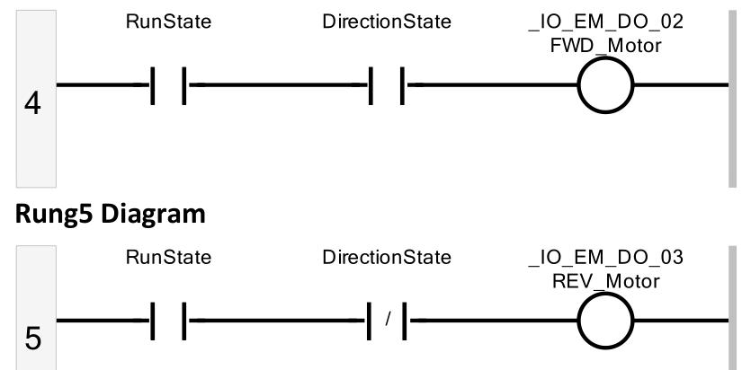
Typing a tool list on a switch with four bits and no keypad.
A tool changer that services one station is a demo. To make it a process it needs a
list — so Stage 5 introduces PositionSequence[1..10], a program-scoped
array whose dimension bounds the sequence length. Exceeding it faults the controller
outright, which makes index containment a safety requirement rather than good manners.
The hard part isn't the array. It's data entry. The trainer has two push buttons and one four-bit thumbwheel — no keypad, no display. So the operator interface becomes a gesture: a "maximum seen" latch captures the highest value dialled since the last store, and dialling down through zero is the store command. Switch position 0 isn't a valid station, so it gets appropriated as a command key; position 9 is reserved as the sequence reset. A four-bit switch ends up serving as both a data field and a keyboard. This is representative, not contrived — minimising I/O point count is routine commercial pressure, and it routinely pushes complexity out of the panel and into the program.
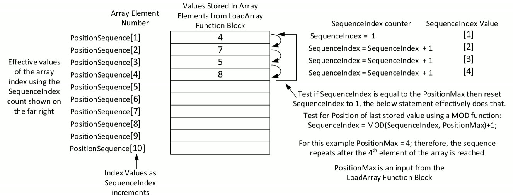
SequenceIndex is a DINT purely because the MOD operator demands one. Image: lab documentation v1.1.
One subtlety hides in that listing. Reset sets PositionMax to 1, and every
store increments it, so after n entries the register reads n+1 — one more
than the number of tools stored. The sequencer compensates on the other side, wrapping the
index the moment it reaches the maximum rather than passing it:
FB_SequenceArray also carries a DetectedFlag, which guarantees
exactly one advance per arrival no matter how many scans the sensor stays true, and exports
PickUp_EN and Place_EN as one-scan event pulses. The
sequencer has no use for those pulses itself. They exist because Stage 6 needs exactly those
two events, and generating them here avoids duplicating arrival detection later.
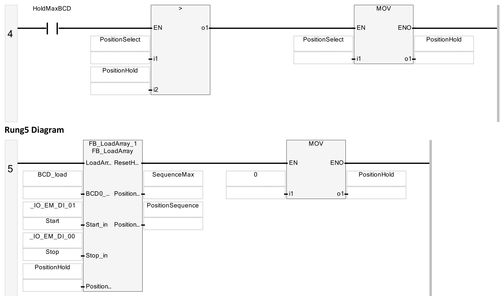
Dwell at the transfer point. Count the parts. Finish the lap.
The final stage adds three independent capabilities across rungs 9–16, and each one is a different answer to "what does a real process need that a demo doesn't?"
A transfer delay, because a real gripper needs dwell time.
PlaceDetectPulse sets a latch that enables a 500 ms TON; the
timer's own Q resets that latch. The intermediate signal
Partwait_Timing — true only while the timer is running — goes onto both motor
rungs as a normally-closed contact, holding the wheel still for the duration.
A parts counter, a CTU clocked by PickDetectPulse.
Its reset is tied to the constant FALSE deliberately, so the total survives stop
and restart — it's an inventory figure, not a control variable.
A cycle stop, which is the interesting one. A conventional stop halts the
wheel wherever it happens to be, potentially stranding a tool mid-transfer. The cycle-stop
circuit inverts the seal-in of rung 1: it latches on Stop and unlatches on
Start, and sits in parallel with RunState on every rung that
RunState gates. The process then keeps running after the stop request until two
conditions coincide — at least one place event has occurred, and
SequenceIndex has wrapped back to 1. Then the latch breaks and the wheel halts
at the base with the sequence complete. That counter guard exists to handle Stop pressed
immediately after Start, which would otherwise satisfy the index condition trivially and
terminate before any work was done.
Try it — load a sequence and run the magazine
This is the finished machine: the thumbwheel gesture, the array, the shortest-path decision, the dwell timer, both counters and the cycle-stop latch, all wired together exactly as the rungs specify. Load a sequence the way an operator would — dial 9 to reset, then for each tool dial up to its number and back down through 0 — pick a base, and press Start. Single-scan pulses are stretched so you can see them.
Don't review the diagram. Review what the compiler emitted.
CCW's QuickLD compiler writes an intermediate Structured Text file for every built ladder program — the ladder flattened into sequential assignments, in scan order. It is a far more reliable object to review than the drawing, because branch topology, evaluation order and write ordering are all explicit rather than implied by geometry. Every committed project was verified by reading that file against intended behaviour.
The method costs nothing, needs no hardware, and turned up three things that inspection of the rendered ladder did not.
FINDING 01Stage 6 was never transcribed into the controller project.
The Stage 6 CCW solution is byte-identical to Stage 5 in both Prog1.stf and the
project variable list, and its generated ladder printout shows the same eight rungs. None of
the Stage 6 additions exist in the controller: the part-wait timer, the parts counter and the
cycle-stop circuit are all absent. The design is complete and validated in simulation — the
widget above is the working record — but the transcription into CCW is outstanding.
FINDING 02The rotation block's arguments are shifted by one slot.
At Stage 5 the base should migrate from a compile-time constant to the thumbwheel, so the
operator can move the transfer station while the sequence runs. The generated code says
otherwise — the literal 7 left over from the Stage 4 pattern is still sitting in
the first input box, pushing every other argument down one:
Two consequences. The base is frozen at station 7 instead of tracking the thumbwheel. More
seriously, the block's evaluation guard — IF (PositionDetectNumber_in =
PositionSelect_in) — now compares the current array element against the
constant 7 rather than the wheel sensor against the operator's base, so the direction
decision re-evaluates on the wrong event entirely. FB_detectTool_1 is bound the
same way and inherits the same defect. The fix is a three-field reassignment on one rung.
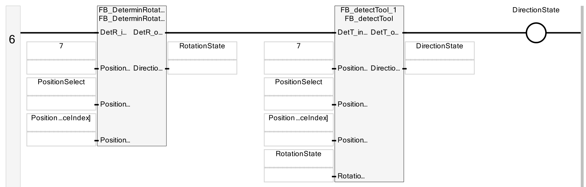
7 on the first input of both blocks. Put this beside the Stage 4 rung and the cause is obvious: the two rungs are structurally identical and only the contents of six input boxes changed between stages. A constant in the first box looked right, because it had been right one stage earlier.FINDING 03An output coil overwrites the function block's own result.
On the direction rung, DirectionState is assigned twice — once as the output pin
of FB_detectTool, and once as an OTE coil terminating the rung. The compiler
emits them in that order:
DetT_out_EN merely propagates rung power, so the second write replaces the
computed direction with the rung's power state, and it lands last — meaning the motor rungs
downstream consume the overwritten value for the rest of that scan. This pattern reproduces
the reference manual's own figures rather than originating here, and it is present from
Stage 4 onward. The remedy is to delete the terminating coil and let the output pin be the
sole writer. It needs confirming on hardware before the direction logic is trusted, because a
program whose direction Boolean is pinned true still appears to run — it would just
always rotate forward.
All three share a characteristic worth naming: each is invisible in the graphical ladder and obvious in the generated text. Findings 02 and 03 in particular are aliasing errors — a correctly drawn diagram whose bindings do not mean what they appear to mean. Which is a decent argument for treating the compiler's intermediate output as a first-class review artefact in PLC work, the same way a generated assembly listing gets read in safety-critical embedded development.
What this project proves.
Incremental beats monolithic when every stage is downloadable. Six programs that each run on the trainer is a fundamentally different debugging experience from one program that either works or doesn't — every regression has an obvious blast radius. The ladder/ST boundary is a real design decision, and drawing it at "interlocking versus arithmetic" kept a sixteen-rung program legible while it did genuinely algorithmic work. An algorithm's known limitation should be characterised, not apologised for: the antipode test's asymmetry turned out to be exactly one equidistant target per base out of seven, with zero suboptimal choices in the remaining 48 pairs — a bound worth more than a vague caveat. And the diagram is not the program. Two of the three defects here were bindings that rendered perfectly and meant something else; both were immediately visible the moment the compiler's own output was read instead.
Lab documentation v1.1 by Dr. Sangram Redkar, Ira A. Fulton Schools of Engineering, Arizona State University, distributed with the trainer by plccable.com; the six Structured Text function blocks are transcribed from its Appendix A. Figures credited above are reproduced from that manual. Implementation, simulators, verification and report by Prajjwal Dutta.